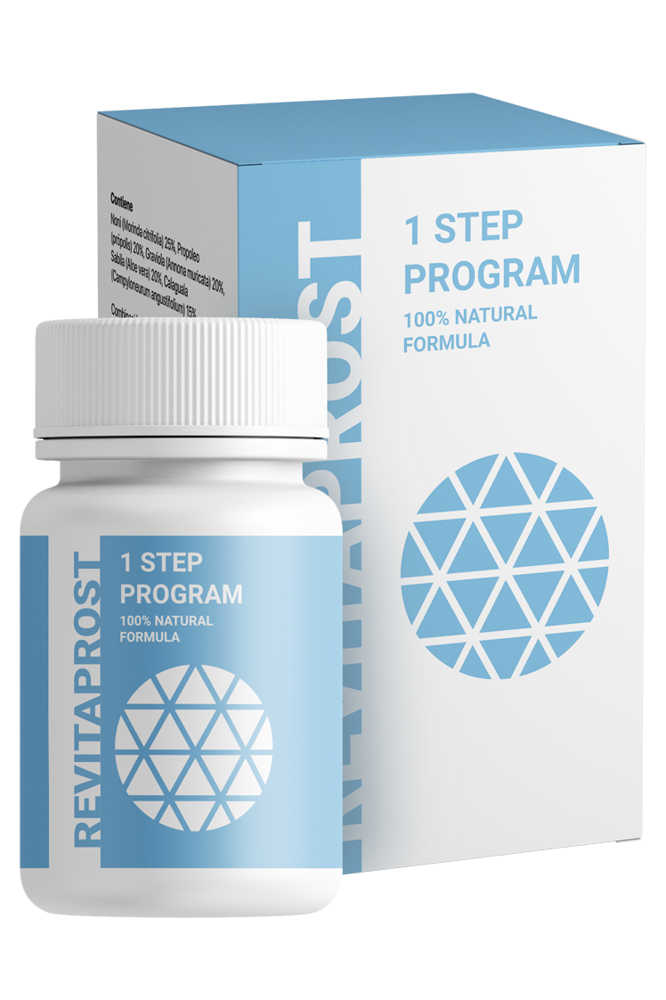
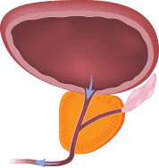
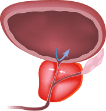
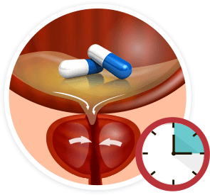
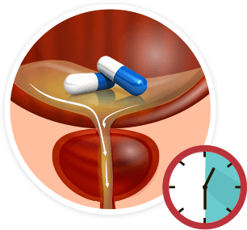
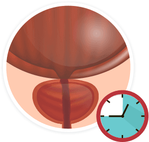

Solución natural a los problemas de la próstata
¡Deshazte de la prostatitis rápidamente y restaura la función sexual sin
dolorosos y humillantes
procedimientos médicos!
procedimientos médicos!
S./ 320S./ 160
- Elimina la inflamación de la próstata
- Alivia el dolor y el ardor de la uretra
- Previene el desarrollo del cáncer próstata
- Restaura una erección saludable

Hecho en Europa
Desarrollado en Israel
-50%
Precio al por menor:
S./ 320
S./ 160
¡Novedad!
+ ENVÍO RÁPIDO
¡Pide con 50% de descuento!
¿Tienes algún síntoma de prostatitis?
Si tienes alguno de los siguientes síntomas, ¡puedes tener prostatitis!
¡No seas indiferente a tu salud! La prostatitis puede provocar infertilidad e incluso
cáncer
¿Qué es la prostatitis y por qué debes de combatirla?
Se trata de una patología en forma de inflamación o infección de la próstata. De acuerdo
con el Foro Europeo de Asociaciones Médicas, entre el 35% y el 50% de los hombres en Europa sufren de esta
enfermedad.
35%
- 50%
PROSTATITIS
Normal
Inflamada
Presentación de Revitaprost y su maravillosa fórmula
Revitaprost es un aditivo que tiene un efecto curativo natural al tener prostatitis.
¡Es un resultado de 10 años de investigación! El principal objetivo de la investigación
fue crear una fórmula de curación de la prostatitis en tres etapas:
¿Por qué los urólogos recetan Revitaprost a sus pacientes
y 4 de cada 5 expertos europeos avalan su eficiencia?



Daniel García, Iniciativa Europea de Investigación, 15 años de
experiencia en el sector médico.
El Revitaprost puede ser llamado una innovación en la urología. Una simple fórmula de 3 etapas
puede ayudar a reducir la inflamación de la próstata. Los ingredientes activos del Revitaprost penetran en
la próstata inflamada, facilitando y reduciendo las zonas inflamadas. De esta manera, la glándula
prostática regresa a su tamaño normal. Por eso recomiendo este producto a todos mis pacientes que
no experimentan dolor abdominal.
Lorenzo Torres Asociación Europea de Urología, 14 años de
experiencia en el sector médico.
Los ingredientes de Revitaprost aumentan la capacidad natural del cuerpo para
tratar los procesos inflamatorios. De esta manera, reduce las posibilidades de cáncer e
infertilidad en los hombres. También liberan la uretra y facilitan el flujo natural de orina y esperma.
Les recomiendo este producto a todos los hombres que quieran ir al baño sin sentir
dolor.
Martino Bass, Universidad de Gotemburgo, Suecia. Departamento de
Urología, 13 años de experiencia en el sector médico.
Les recomiendo Revitaprost a todos los hombres que quieran volver a sentirse
fuertes. Es una solución rápida y eficaz para los hombres que están cansados de ver sangre en su
orina y esperma. Gracias al complejo de ingredientes naturales, también se restaura la función
sexual.
La eficacia de Revitaprost,
se debe a los ingredientes que facilitan la micción.
Hecho en Europa
Se ajusta por completo a todos los estándares de calidad de la UE. Desarrollado en Israel
No se recomienda su uso con anticoagulantes
Revitaprost ha ayudado a 4512 hombres restaurando por completo el tamaño
normal de la próstata en la última etapa del ensayo clínico
La seguridad de los ingredientes es cuidadosamente comprobada y garantizada
Los resultados de pruebas recientes han confirmado que Revitaprost es el mejor
producto en el mercado. En diciembre de , la Asociación Europea de Urólogos llevó a cabo ensayos
con 4 512 pacientes de entre 36 a 60 años de edad.
Los resultados fueron los siguientes:
Otros métodos
50%
Reducción del dolor y ardor
57%
Normalización de la micción
73%
Utilidad a largo plazo
62%
Número de efectos secundarios
100%
Reducción del dolor y ardor
98%
Normalización de la micción
97%
Utilidad a largo plazo
99%
Número de efectos secundarios
¡Historias de éxito de hombres que ganaron la batalla con la prostatitis!
Ejemplos de los comentarios que recibimos cada mes
FAQ
¿Qué es Revitaprost?
Revitaprost es un producto único que ayuda a tratar la
prostatitis en tres etapas. Las sustancias activas penetran profundamente en las células de la próstata
inflamada y normalizan sus funciones. De tal forma pueden regresar la próstata a su tamaño normal.
¿Cómo es mejor tomar Revitaprost?
El tratamiento mínimo 21 días
- Tomar una cápsula 3 veces al día antes de comer
- Restaura la glándula prostática, normaliza la micción y elimina el dolor abdominal.
Tratamiento óptimo 2 meses
- Tomar una cápsula 3 veces al día antes de comer
- Restaura la glándula prostática, normaliza la micción, elimina el dolor abdominal, aumenta la libido, elimina la disfunción eréctil, mejora la espermatogénesis y la fertilidad.
¿Hay efectos secundarios?
Si no eres alérgico a los componentes del producto, entonces es completamente
seguro. ¡Los ensayos clínicos han demostrado que el producto no tiene efectos secundarios!
¿Cómo pedir?
Rellena el formulario en nuestro sitio web
(Nombre y teléfono)Confirma tu dirección y fecha de entrega
(Un ejecutivo te llamará después de realizar el pedido)
Recibe el producto y paga
(Pago contra entrega al mensajero) ¡Envío rápido!
- Obtendrás Revitaprost de 1 a 3 días después de realizar el pedido.
- ¡Pagarás solo después de recibir el producto!
- Embalaje 100% seguro, anonimato para la entrega y la facturación.
Tu pedido se colocará en una caja segura sin especificar el tipo y origen del
contenido.
¡Revitaprost es tu poderosa arma contra la prostatitis!
- ¡Deshazte de la prostatitis
- No más sangre en la orina y esperma
- Aumenta la libido
- Sin efectos secundarios
-50%
Precio al por menor:
S./ 320
S./ 160
¡Novedad!
+ ENVÍO RÁPIDO
¡Pedir Revitaprost con 50% de
descuento!